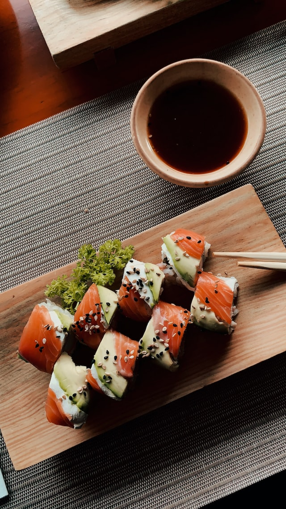

Sushi

A staple rice dish of Japanese cuisine,
consisting of cooked rice flavoured with vinegar and a variety of
vegetable, egg, or raw seafood garnishes and served cold.
Ingredients:
- 6 sheets sushi seaweed aka nori
- 1 batch prepared sushi rice
- 1/2 lb sushi-grade raw salmon or desired raw fish of choice
- 4 oz cream cheese sliced into strips
- 1 avocado sliced
- soy sauce for serving
Steps:
- 6 sheets sushi seaweed aka nori
- 1 batch prepared sushi rice
- 1/2 lb sushi-grade raw salmon or desired raw fish of choice
- 4 oz cream cheese sliced into strips
- 1 avocado sliced
- soy sauce for serving